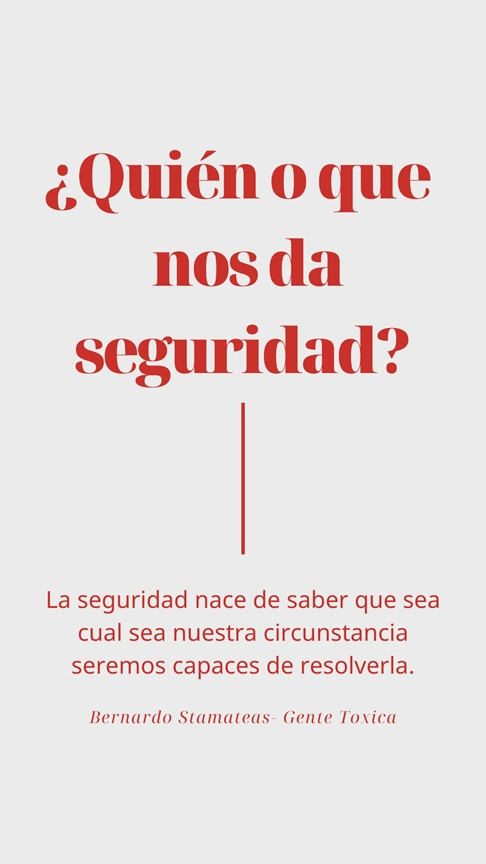

Bernardo Stamateas- Gente Toxica
Me gusta este libro, tuve años viéndolo en vidrieras y bibliotecas y confieso que no había llamado mi atención, entonces estos días estaba experimentado eso de los audiolibros, en esta época o mejor dicho en estos tiempos debemos adaptarnos a la tecnología , a hacer nuestras vidas mas simple y más nuestras.
Entonces, empecé a buscar en Spotify los audiolibros, y me encontré con este de “Gente Toxica“, me dije bueno vamos a experimentar con este libro que no me gusta mucho y asi veo si puedo escuchar un libro narrado, no tenia grandes expectativas y resulta que no podía ni dejar de escuchar el libro ni de investigar sobre el libro.
El narrador de Gente Toxica en Spotify la verdad no se quien es, por su acento yo le asigno el gentilicio de argentino la voz serena y la animación que le dio a cada capitulo hizo que mas de 400 minutos se hicieran interesantes, reflexivos y auto examinados.
Pero claro el narrador tiene su importancia pero no olvidemos que el centro de la narración es el texto en si , el libro , este libro que por su titulo crees que es para determinar personas toxicas o autoexplorarte pero no resulta que con este libro me di cuenta de varias cosas y me enseño otras tantas.
Los libros de autoayuda son un arma de doble filo para mi, por un lado te ayudan con las demás personas pero si eres como yo que primero me analizo y luego aplico lo aprendido a los demás te das cuenta de ti y de tus comportamientos.
Este libro de gente toxica , quizás sea uno de los libros que veas y digas quien puede comprarlo o quien lee esos libros es porque busca solucionar sus problemas o relaciones con un tipo diciéndote cosas que ya sabes y si es cierto, yo lo pensaba y por ello nunca busque leerlo o adquirirlo pero también es cierto que muchas de esas cosas las sabemos de sobras pero no con las mismas palabras y los libros son como la perspectiva , todos observamos lo mismos pero no todos vemos lo mismos en lo mismos. Los libros nos escogen y cuando los leemos hacemos énfasis en lo que necesitamos en ese momento por eso desde hace un tiempo atrás apoyo a las personas que deciden releer un libro, ver una película, ya que al igual que las canciones cambian su significado con tu situación, no va a ser lo mismo escuchar amor eterno de ana Gabriel con un despecho que recordando un buen amor, y asi son los libros y las películas.
Por ello, siento que el momento de leer este libro fue el perfecto para mi, uno no va diciendo por ahí o que le hace falta, los sueños que no se logran conciliar ni las lagrimas con frustración que aprendemos a tragarnos con cervezas o comida. Somo amos de los disfraces de los estereotipos y al leer este libro me di cuenta de lo perdida que estaba, de lo que carecía, de que eso que quería ya era hora que trabajara en ello y no pensara en el quizás… muchos piensan que nuestros padres construyen los cimientos de nuestras vidas y de ahí tenemos que construir nuestra vida pero no es cierto, si ellos construyen nuestros cimientos, ellos nos inculcan nuestros valores pero con el tiempo somos nosotros los que debemos construirnos, y eso solo lo podemos hacer sabiendo que queremos ser y eso es algo que todos lo sabemos, todos los dicen pero nadie te dice que es una de las cosas mas difíciles de conseguir, de trabajar, tienes la intención pero llegar a ello significa sacrificio y error tras error, aunado a que no tienes la certeza que dia o a que ella logres llegar pero como decía una pauta publicitaria y una canción lo importante es llegar.
Gente Toxica, recomendado, lección importantísima no te dejes llevar de los libros, una opción buenísima que tiene amazon Kindle es que te permite leer una fracción del libro “prueba” hazlo , lee las primera paginas , determina si te gusta la manera de escribir del autor, si las primeras paginas van con esos que quieres leer y hacer caso del instinto y leer, o escuchar, pero concéntrate en tu libro, analizarla y trata de aplicarla de quererla y transmitirla a tu ser.